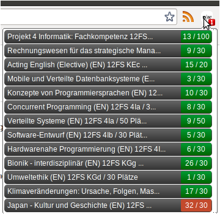

ESChecker ist ein Chrome Browser Plugin, welches es dir erlaubt,
die Einschreibungen im Einschreibesystem der FHNW zu überprüfen.
Installation
Du musst dazu lediglich dieses Plugin in deinem Browser installieren
und im ES-System angemeldet sein.
Falls du Fragen oder Anregungen hast, mir ein Kaffee oder Bier spendieren möchtest
kannst du dich bei mir melden:
florian.luescher@students.fhnw.ch
Benachrichtigung
Falls du in einem Modul in die Warteliste gerutscht bist, so
zeigt dir ES Checker dies sofort an und du kannst die Punkte neu
verteilen.
Details
ES Checker ist in der Lage, die alle Details der Einschreibungen
in einer Übersicht anzuzeigen. Das umständliche Absuchen aller Klassenlisten
im ES System gehört der Vergangenheit an!
Auch hier kannst du sofort erkennen wo du eingeschrieben bist und wo nicht,
sowie an welcher Position du dich befindest.

Einstellungen
Du kannst in den Optionen das Interval der Abfragen einstellen.
Die Standardeinstellungen sind aber absolut in Ordnung.